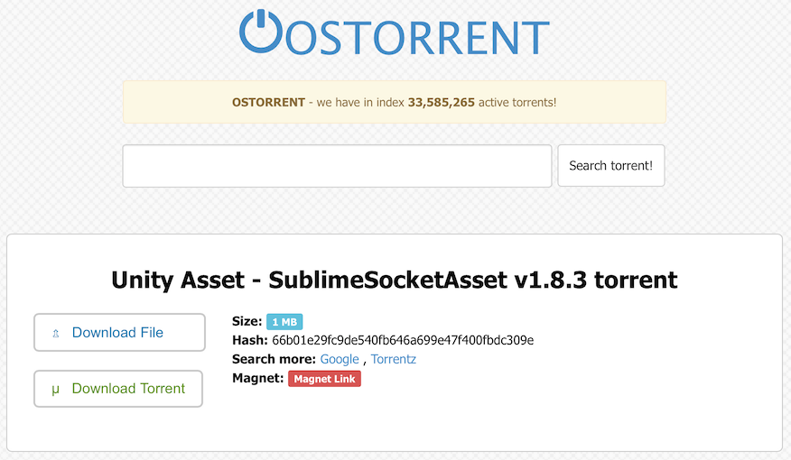

有料Assetがパクられ無料で3,000DL/月くらいされた話してきた
概要
ここで、
Unityアセットリリースミーティング
https://picos.doorkeeper.jp/events/32098
有料で販売していたAssetが、チューゴクのSNSとかで無料になってDLされてた話をしてきた。
DLの数字は2014年のなかとかその辺。
これ。
SublimeSocketAsset
https://www.assetstore.unity3d.com/jp/#!/content/8003
MacとかでSublimeText使ってコード書きやすくするやつ。
最近はVS Codeとかが出たおかげで、これ使わなくてもかなり楽にコード書けるようになったのでよかった。
気づいた経緯
ググったらDLできたぞって買った人からメールでもらった。
ググってみると

なるほど。
もう記録残してないけど、チューゴクのSNSで
Chinese A:「こんなのあったよ～無償で配っちゃるぜ！」
Chinese B:「マジか、お前サイコーだな！」
Chinese A:「せやろ？」
みたいなやりとりでzipがアップされてるのもあって、それに数百のいいねがついてたりして、
こいつら全員死ねばいいな？って思ったりした。
一時期、Asset名でググるとpage 3くらいまでがStoreのやつ + 違法アップ、みたいな感じで辛かった。
ちな局所的にDL数出してるところがあったんで、その数字が3,000/monthくらいだった。
何がイヤか
儲からん
まあ前提として。
正しいユーザーからのお問い合わせなのか？
タイミング的に最悪だったのが、やたらお問い合わせがくることがあった事。
お問い合わせがきて、正しいユーザーかどうかわからんままお話する、みたいなのが発生する。
これが一番腹が立った。
「お問い合わせしてきたこの人は、正しいユーザー、、なんだと思うんだけど本当かな」
って、人を疑わなければいけないっていうのは、最悪の経験。
対策ゥ？
何手か、、
0.Googleさんとかに「俺様は権利者だ、こいつら違法アップローダどもは不正なことをしている、殺せ、いいな」って送る
1.購入記録を元に初回起動、あなたは善人ですか？ってやる(作るのも使うのもウザい
2.起動時問い合わせ(作るのも使うのもクソウッザい
最終的に選んだ、絶対殺す策
1.メジャーバージョンをあげる
「そうだ、メジャーバージョンをあげよう」
パクで出回っているやつを過去にする。
ちょうど互換性破壊するような調整入れるタイミングだったんで、問題なく。
あと無料で試せる版の開発をしたりした。そしたら結局ユーザー増えたので、まあよかったのかなっていう。
でも開発動機として不満は残るので、今後は自分では一切考えないようにしようって思った。殺し屋でも雇おう。
2.検索から殺す
検索からの抹殺は主に自分の精神の健康のために行った。
このへんはUnityとかにお願いしても、「権利者以外がシャシャリきてるんじゃねえよ～」ってUnity側が追い払われたりするんで、
不快だがゴミどもは自分の手で殺そう。
結果
観測しないことにしたのでよく知らない。
関係なくバージョンが上がり、それらの質はよくなったので、DLは増えた。
おまけ1：お問い合わせ言語ランキング
最近はメッキリ減ったけど。
1位.英語(60%over)
2位.中国語(10%くらい)
3位~ 韓国語、日本語、ドイツ語、ロシア語、
中国のひとは、こっちが日本人だとわかると「日本語訳もつけてみた！みやすいと嬉しいな、どうかな」みたいな感じで
日本語訳されてるメッセージ + 中国語原文、みたいなのを送ってくるひとが数人いた。
おまけ2：避けたほうがいいAsset名
すでにWebで著名なフレームワークとかがある場合、
たとえば Ruby on Rails とかと被るのは避けよう。
名前がバッティングしようものなら本気で検索に引っかからない。
避けよう。
絶対に避けよう。
絶対に。
AssetRails
https://www.assetstore.unity3d.com/jp/#!/content/27672